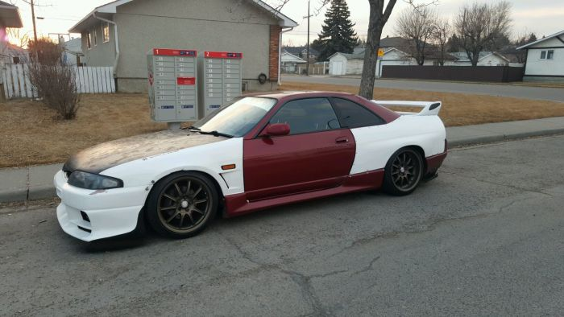
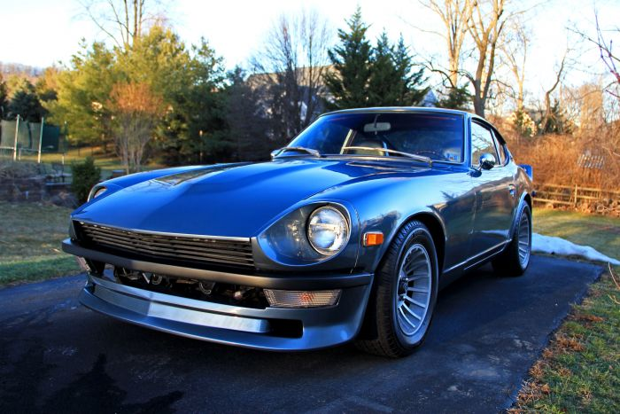

Nu conteaza ca e noua sau veche, e masina ta! Pasionatii de masini au gusturi variate ce trebuiesc respectate
Aceasta masina a fost neglijata si abandonata de catre fostul proprietar care i-a distrus ambreiajul si transmisia. Detinatorul curent a reconstruit usor-usor aceasta masina si a adus-o intr-un stadiu destul de bun. Acesta spera sa aiba cea mai unica masina din oras
Acesta este un 240z din '72. A fost cumparat in Iulie ca si un vis de proiect. Are transmisie in 4 trepte, a fost revopsita in exterior. Este in mare parte nemodificata, singurul lucru pe care proprietarul vrea sa adauge momentan este bieleta anti-ruliu pe spate